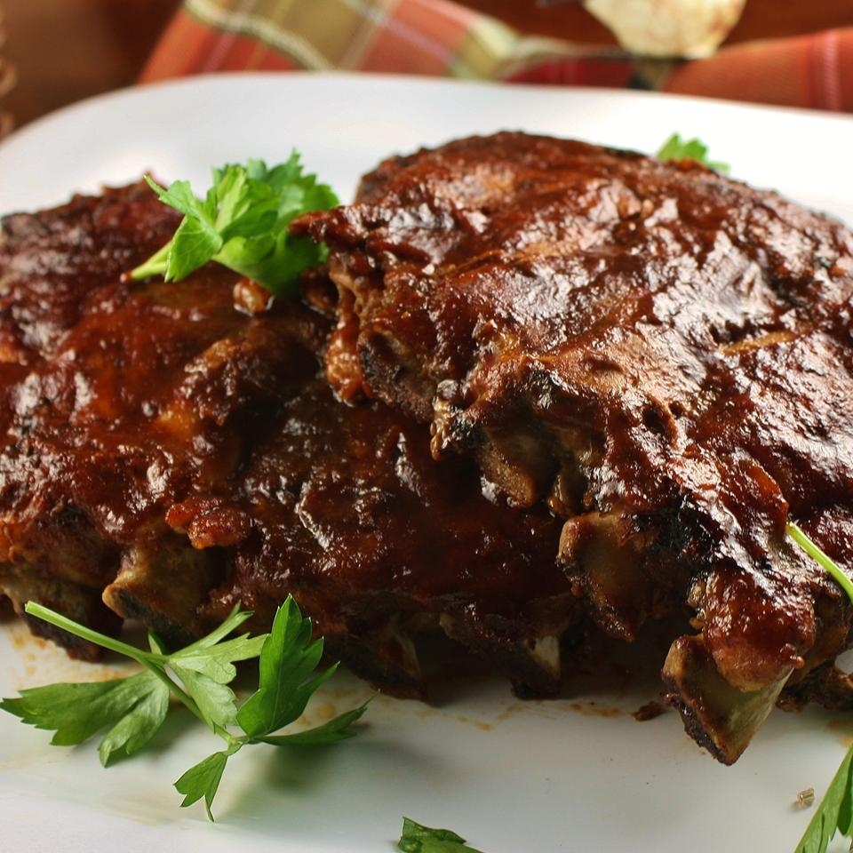

Slow Cooker Baby Back Ribs

Ingredients
3 pounds baby bac ribs, trimmed
salt and ground black pepper, to taste
1/2 cup water
1/2 onion, sliced
1 clove garlic, minced
1 (18 ounces) bottle barbeque sauce